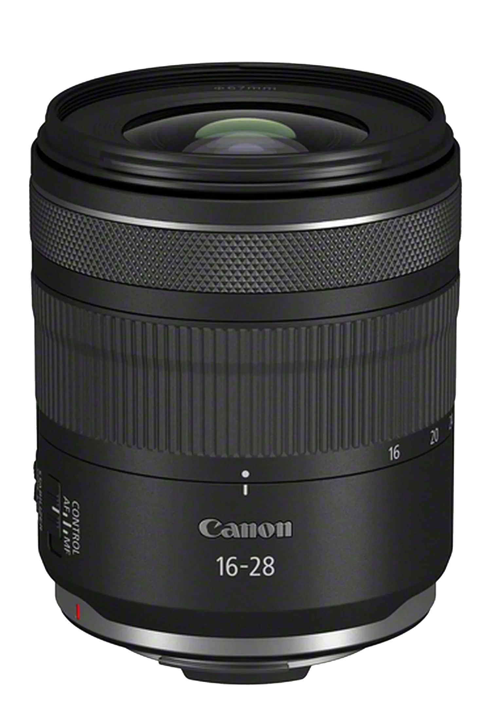
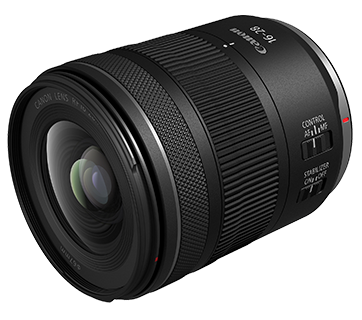

See the whole
room, edge to edge.
The Canon RF 16-28mm F2.8 IS STM widens your field of view to 108° at the short end and holds a constant f/2.8 all the way to 28mm — a compact, weather-resistant zoom built for interiors, landscapes and low light, without the size or price of an L-series lens.

An ultra-wide zoom that stays out of your way.
The 16-28mm range covers the two focal lengths wide-angle shooters reach for most, and the fixed f/2.8 aperture means exposure doesn't shift as you zoom — useful for both stills and run-and-gun video.
Five things doing the work.
A simplified key to what's built into the lens — matched to the labelled points on the diagram.

Control ring
A dedicated customisable ring near the mount for quick access to exposure or focus settings.
Leadscrew STM motor
Drives fast, quiet autofocus for both stills and video, with Eye Detection AF on compatible EOS R bodies.
4 UD + 2 aspheric elements
Optical elements aimed at controlling distortion and chromatic aberration across the zoom range.
Large front element
Gathers more light for the wide aperture and accepts slim-profile filters despite the ultra-wide coverage.
5.5-stop image stabilization
In-lens IS that can combine with in-body stabilization on supported cameras for steadier handheld shots.
Prices and stock on Amazon change often — worth a quick check before you commit.
One zoom, several jobs.
The 16-28mm range is narrow enough to stay useful, wide enough to change how a scene reads.
See the current price, availability and seller details on Amazon.
Product information and availability can change. Check the listing directly before you decide.
Check Canon RF 16-28mm F2.8 on Amazon → Affiliate link · if you purchase through this page, we may earn a qualifying commission at no additional cost to you.